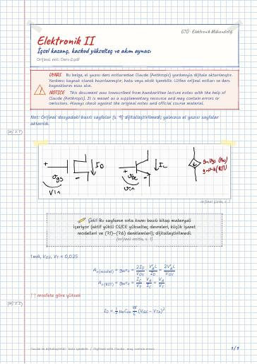
İçsel kazanç, kaskod yükselteç ve akım aynası
The Cascode Amplifier · Cascoding · 7.4 IC biasing · Current mirror
Electronics II — lecture notes at Gebze Technical University (GTU) Electronics Engineering
Çok katlı ve fark kuvvetlendiricileri, akım aynaları, frekans yanıtı, geri besleme ve çıkış katları.
Multistage and differential amplifiers, current mirrors, frequency response, feedback and output stages.
Bu sayfada: Ders Notları Dijital Notlar (LaTeX) Final/Vize Çalışması
El yazısı notların LaTeX ile yazılmış, aranabilir dijital versiyonları. Şablon ve derleme: latex-sablon.

The Cascode Amplifier · Cascoding · 7.4 IC biasing · Current mirror
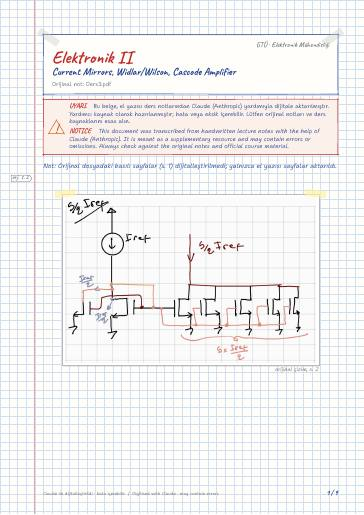
BJT Circuits · Current Steering BJT · Wilson Current Mirror · Bob Widlar Current Source · 7.3 The Cascode Amplifier
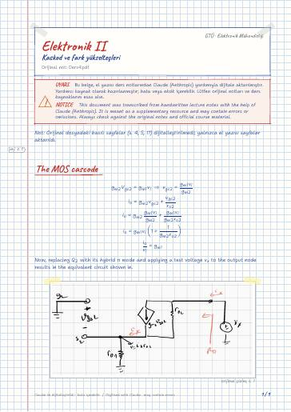
The MOS cascode · BiCMOS cascodes · Differential amplifier
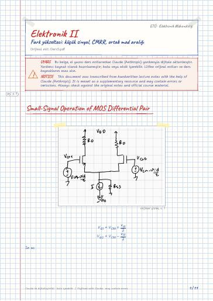
Small-Signal Operation of MOS Differential Pair · Effect of r_o · The differential half circuit · Common-Mode Gain and Common-Mode Rejection Ratio · Effect of g_m mismatch on CMRR g_m1 ≠ g_m2 · Common mode Range
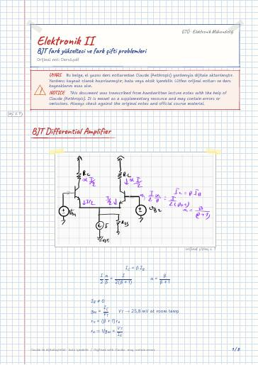
BJT Differential Amplifier · Diff mode half-circuit model · Common mode half-circuit model
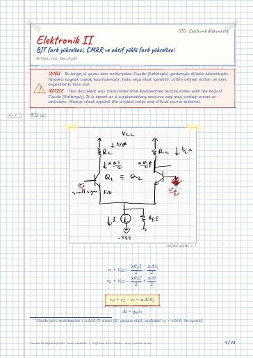
Effect of r_o? · CMRR and Common mode operation · Ac mode · CMRR diff · Active-Loaded CMOS differential Amplifier
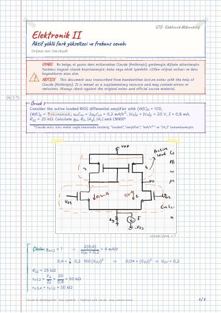
Frequency response · 2. kapasiteden kaynaklı etkiyi koyalımkoyalım
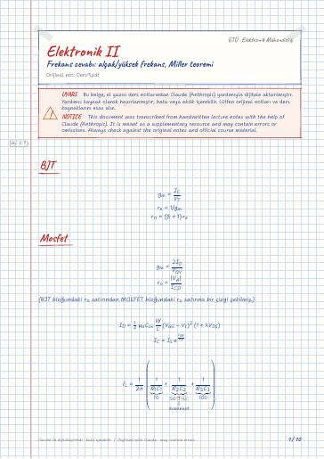
BJT · Mosfet · The CE amplifier · Soru · In BJT · Miller's Theorem
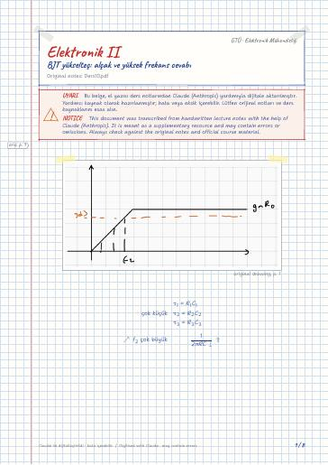
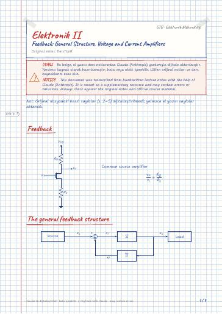
Feedback · The general feedback structure · 1- Voltage Amplifiers (Shunt (o) – Series (I)) · Two port network equivalent · Complete model · 2- Current Amplifiers (Series (o) – Shunt (I))
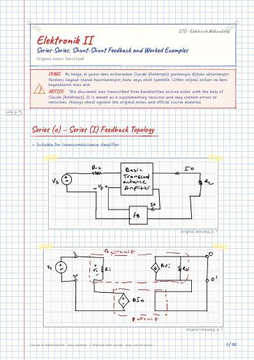
Series (o) – Series (I) Feedback Topology · Two-port equivalent circuit · Shunt – Shunt feedback topology (Transresistance amplifier)
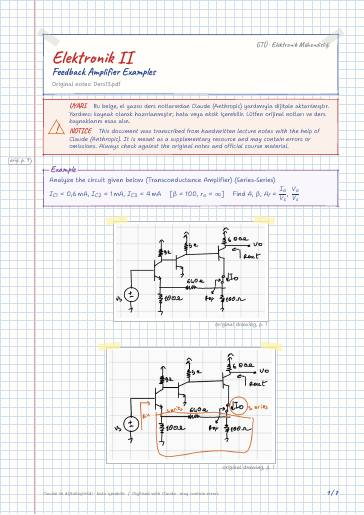
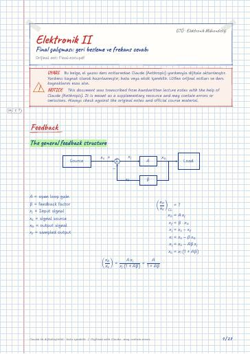
Feedback · The general feedback structure · Voltage Amplifiers (Shunt-Series) · Two port network equivalent · Complete model · Current Amplifier feedback
Analog Haberleşme · Elektromanyetik Alan Teorisi · Elektromekanik Enerji Dönüşümü · Elektronik II Laboratuvarı · Mikroişlemciler · Mikroişlemciler Laboratuvarı
GitHub'da klasörü aç← 5. Dönem
Ders materyallerinin hakları ilgili öğretim üyelerine ve GTÜ'ye aittir; eğitim amacıyla paylaşılmıştır.